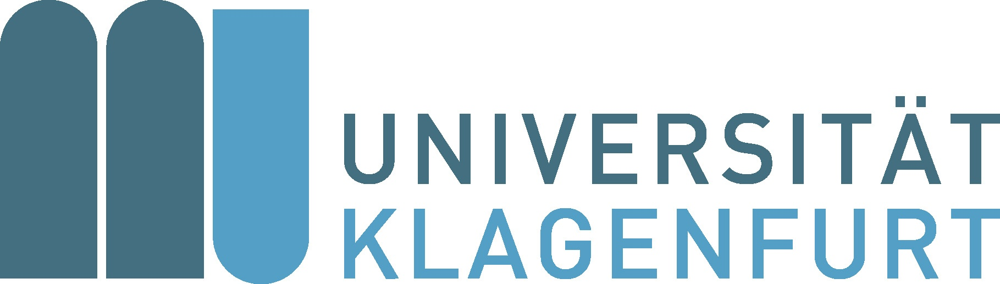
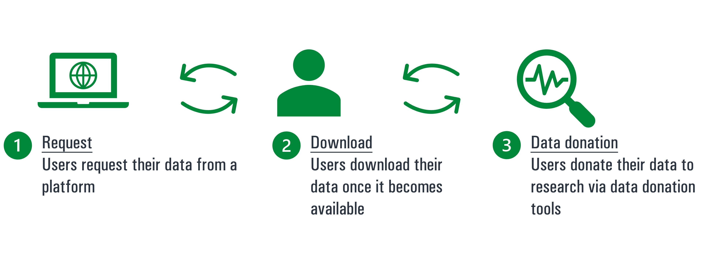
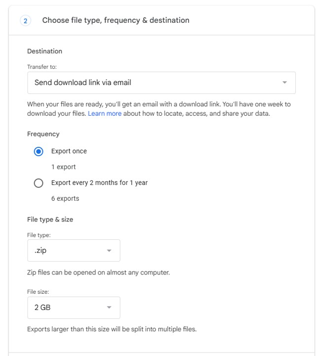
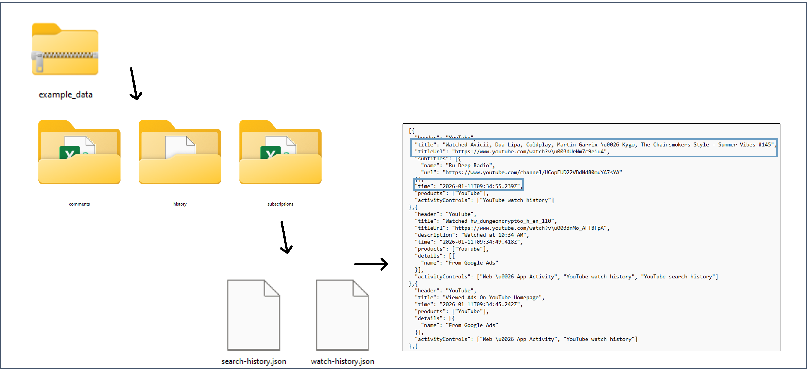
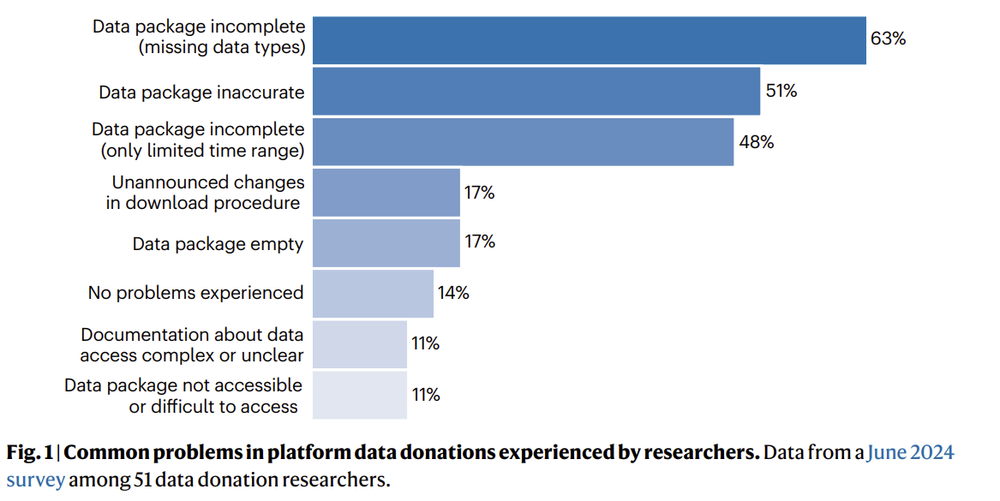
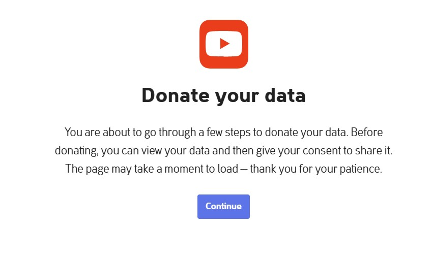
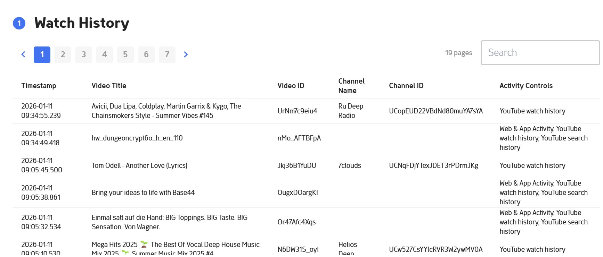
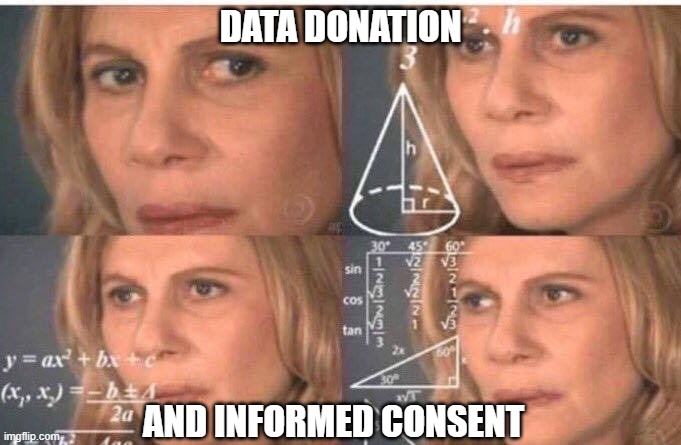

Digital Traces via Data Donations
Workshop DGPuK RezFo 2026
Session 2️⃣: Data Donation Studies (Participant Perspective)
👉 Part of the SPP DFG Project Integrating Data Donations in Survey Infrastructure
Agenda
What are data donation studies?
Participant perspective, including
📢 Task 1: Inspect your DDPs
📢 Task 2: Try donating your data
📢 Task 3: Extract personality profiles from data

Image by Hope House Press via Unsplash
1) What are data donation studies?

Source: Image by Markus Winkler via Unsplash
Changes in legal contexts
- EU secures right to own data in Art. 15 of the General Data Protection Regulation (GDPR)
- “The data subject shall have […] access to the personal data” (§ Art. 15, 1)
- “The controller shall provide a copy of the personal data” (§ Art. 15, 3)
- According to § Art. 20, users must receive their data “in a structured, commonly used and machine-readable format” (§ Art. 20, 1)
Changes in legal contexts
- EU secures right to own data in Art. 15 of the General Data Protection Regulation (GDPR)
- “The data subject shall have […] access to the personal data” (§ Art. 15, 1)
- “The controller shall provide a copy of the personal data” (§ Art. 15, 3)
- According to § Art. 20, users must receive their data “in a structured, commonly used and machine-readable format” (§ Art. 20, 1)
👉 Solution: Platforms offer data download packages (DDPs), which users can request and download to inspect data.
👉 Consequence: Researchers uses DDPs as part of user-centric data donation studies.
Please raise your hand ✋ if you…
1) knew about this right?
2) ever tried to request your data?
🤔
In Switzerland, only 8% of members of an online access panel did (Pfiffner & Friemel, 2023, p. 17)
What are data donation studies?
Definition 💡: Data donation studies are a user-centric, privacy-by-design method for collecting digital traces:
- Users have the right to request, access, and download data that platforms collect about them.
- They can make their data packages (DDPs) available to science via data donation tools (DDTs), often in the context of surveys.
- Researchers use CSS methods to filter, anonymize, and aggregate this data locally on participants’ devices.
- Participants can inspect/delete their data before any data is transferred.
Which types of data do DDPs contain?
For platforms like Facebook, Instagram, or YouTube, for example… (Hase et al., 2024)
- User profiles (e.g., privacy settings)
- Activities (e.g., friends, likes, searches, exposure, analog movements)
- Content and context (e.g., ads watched, algorithmically inferred interests)
How is data from DDPs different?
Compared to APIs (Haim & Hase, 2023; Ohme et al., 2024)…
- Control & informed consent of users
- Longitudinal data without “rate limits”
- Partly more knowledge about missing data (e.g., unit drop-out)
- Partly additional measurements (e.g., exposure data; non-public data)
How is data from DDPs different?
Compared to tracking (Haim & Hase, 2023; Ohme et al., 2024)…
- Retrospective & often more longitudinal
- Partly additional measurements (e.g., algorithmic inferences)
- Anchored in current provisions in law (for issues with tracking, see Edelson & McCoy, 2021)
👉 but similarly burdensome for participants!
Summary: What are data donation studies? 📚
How is the speed of the workshop?
2) Participant perspective
Source: Image by Markus Winkler via Unsplash
Data donation studies - participant perspective
Figure. Data donation study - participant perspective
Step I: Data request

Figure. Data donation study - participant perspective
Step I: Data request

Figure. Data donation study - participant perspective
Step I: Data request
Figure. Data donation study - participant perspective
How easy (or hard) did you find it to request your data? Did you encounter any obstacles? 🤔
Step I: Data request
Different degrees in standardization for data requests (Hase et al., 2024)…
- Verification procedure
- Specification of data (metrics, observation period)
- Notification on provision of DDP
- Duration of DDP availability
Step II: Download

Figure. Data donation study - participant perspective
Step II: Download
Figure. Data donation study - participant perspective
📢 Task 1: Inspect your DDPs.
- Which variables can you identify?
- How could you use these for research in your field?
- What are questions you may have about these measurements?
Feel free to work in groups of 2-3 people (around 15 minutes)
Step II: Download
Different degrees in standardization for DDP content (Hase et al., 2024)…
Documentation & changes over time
- What does each file “mean”?
- How was this data measured?
Completeness & scope
- Is data missing and, if so, why?
- Why are some data points limited to specific time frames?
- How do we handle multi-lingual DDPs?
Step II: Download
Valkenburg et al. (2025). It is time to ensure research access to platform data
Step III: Data donation
Figure. Data donation study - participant perspective
Step III: Data donation
Figure. Data donation study - participant perspective
Step III: Data donation

Figure. Data donation study - participant perspective
Step III: Data donation
Figure. Data donation study - participant perspective
📢 Task 2: Try donating your data.
Upload and inspect your data. If you could not download the data, use the ZIP folder “example data” (see landing page) for this session.
- Are there any surprising/missing values?
- Did you encounter any difficulties in deleting/sharing your data?
Use this link: https://next.eyra.co/a/nWPJC4?p=999 - replace number after p= with random number. Feel free to work in groups of 2-3 people.
📢 Task 3: Extract personality profiles from data.
Inspect the ZIP folder “example” data for this session (manually or upload it to the data donation study - data you see may then differ). Imagine you are a commercial company.
Based on the trace data, how would you profile this person in terms of….
- sociodemographic characteristics
- their interests
- ads you may target them with
Use this link: https://next.eyra.co/a/nWPJC4?p=999 - replace number after p= with random number. Feel free to work in groups of 2-3 people.
Bias in Data Donation Studies
Similar to tracking studies, data donation characterized by (Hase et al., 2024; Hase & Haim, 2024; Keusch et al., 2024):
- Errors in representation (e.g., coverage error, non-response error)
- Measurement errors (e.g., missing data, specification error)
👉 Not necessarily less biased than survey data - but subject to different bias?
👉 We will talk about this in Session 4️⃣.
Informed Consent in Data Donation Studies
Similar to tracking (Kreuter et al., 2020): Is consent really “informed”? (Groot Kormelink et al., 2025; Hase & Haim, 2024)
Informed Consent in Data Donation Studies
Similar to tracking (Kreuter et al., 2020): Is consent really “informed”? (Groot Kormelink et al., 2025; Hase & Haim, 2024)
- in walk-through interviews, participants “fundamentally misunderstood [this] key principle” (p. 8)
- Anecdotal evidence: sending data via email, sending different data, sending someone else’s data, etc.
- Almost no one deletes data (except for searches!)
Summary: Participant perspective 📚
Questions? 🤔
References
Data Donation Studies - DGPuK RezFo - Valerie Hase